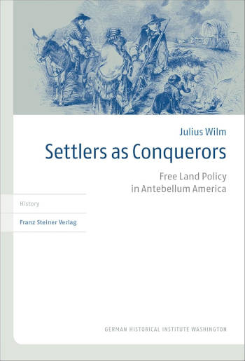

Bücher
Julius Wilm, Ein deutscher Revolutionär im Amt: Carl Schurz und der Niedergang der Minderheitenrechte in den USA der 1870er-Jahre (Berlin, De Gruyter, 2024) 78 Seiten, 9 Abbildungen. ISBN: 9783111430829, 24,95 Euro.
Das Buch ist nun frei verfügbar als PDF-Dateibei der Deutschen Nationalbibliothek!
Der deutsche 1848er-Revolutionär Carl Schurz (1829–1906), der als Sklavereigegner und republikanischer Politiker in den USA der Bürgerkriegszeit Karriere machte, wird bis heute gefeiert als Verfechter der Gleichheit aller Menschen. Dieses Buch zeichnet anhand vieler bislang unbekannter Quellen ein differenzierteres Bild seines späteren politischen Wirkens. Als US-Senator opponierte Schurz seit 1870 gegen den Bürgerrechtsschutz für ehemals versklavte Afroamerikaner in den Südstaaten. Ab 1877 initiierte er als US-Innenminister eine harte Zwangsassimilationspolitik gegen indigene Gemeinwesen. Das Buch folgt Schurz’ Abkehr vom Universalismus früherer Jahre und stellt seine Vorschläge in den Kontext der kontroversen demokratiepolitischen Debatten der 1870er-Jahre. Obgleich sie offizielle Politiken späterer Jahrzehnte vorwegnahmen, trafen Schurz’ Bestrebungen, die Rechte von Afroamerikanern und Indigenen zu reduzieren, noch auf breiten Widerstand.
Rezensionen
“Ein deutscher Revolutionär im Amt will Mythen korrigieren und auch die Diskussion um das deutsche Schurz-Gedenken mit Fakten versorgen.” – Frauke Steffens, "Schatten auf der Lichtgestalt", Frankfurter Allgemeine Zeitung, 5. August 2024.
"Wilm gelingt eine präzise Rekonstruktion von Schurzʼ politischer und intellektueller Biografie in den zwei Jahrzehnten nach dem Ende des Bürgerkriegs. Wer mehr über die Limitationen liberaler weißer Freiheitsideale in einem Jahrhundert der Nationsbildungen und imperialen Landnahmen erfahren möchte, sollte unbedingt zugreifen." – Mischa Honeck, H-Soz-Kult, 3. September 2024.
“Im Geschichtsunterricht könnte anhand der Causa Schurz eine sonderliche ‘Demokratiegeschichte auf beiden Seiten des Atlantiks’ (Hedwig Richter) mit Gewinn erörtert werden.” – Malte Ristau, Geschichte für heute. Zeitschrift für historisch-politische Bildung, Nr. 1 2025, S. 128.

Julius Wilm, Settlers as Conquerors: Free Land Policy in Antebellum America (Stuttgart, Franz Steiner Verlag, 2018) 284 Seiten, 39 Abbildungen, 23 Tabellen ISBN: 9783515121316 | €52
2020 ausgezeichnet mit dem Offermann-Hergarten-Preis der Universität zu Köln.
Inhaltsverzeichnis | Einleitung
Verfügbar in jeder Buchhandlung und vielen Universitätsbibliotheken:
Verlagseite | Worldcat-Eintrag
In den frühen USA war die Vorstellung, dass Siedler unerschlossenes Land kostenlos erhalten sollten, unter der ländlichen Armutsbevölkerung und Sozialreformern außerordentlich populär. Bis tief in die 1830er-Jahre hinein betrachtete der US-Kongress diese Forderung jedoch als fiskalisch und wirtschaftlich unverantwortlich. Dies führte zunehmend dazu, dass Befürworter die Idee als militärische Maßnahme umdeuteten: Landempfänger würden Truppen bei den Bemühungen ersetzen, den Kontinent von indigenen Nationen und rivalisierenden Kolonialmächten zu übernehmen. Settlers as Conquerors untersucht die Debatten um freies Land von den 1790er bis zu den 1850er Jahren und rekonstruiert die Siedlungserfahrungen unter den Landschenkungsgesetzen für Florida (1842) und das Oregon-Territorium (1850). Beide Gesetze versprachen, die Interessen ärmerer Weißer und ihrer Regierung in eine harmonischere Beziehung zu bringen – unter Ausschluss afroamerikanischer Menschen und zum ausdrücklichen Zweck der Vertreibung indigener Nationen. Anhand neuer Quellen zeichnet Settlers as Conquerors den Verlauf der Siedlungen detailliert nach und zeigt, wie die siedler-imperialistischen Experimente scheiterten und die Begründung der Schenkungsgesetze untergruben. Nachdem Ansiedler in Florida aufgrund von Malaria flohen und Milizen in Oregon unkontrollierbare Gewalt auslösten, galten Siedler als unzuverlässige Träger von Regierungsziele.
Übersetzte Rezensionen
"Dies ist die mit Abstand detaillierteste Untersuchung zu freiem Land im Amerika der Vorkriegszeit." — Amy S. Greenberg, Pennsylvania State University
"Dies ist eine kenntnisreiche Studie zu amerikanischen Vorschlägen für die Vergabe kostenlosen öffentlichen Landes, die dem Homestead Act von 1862 vorausgingen." — Christopher Clark, University of Connecticut
"Wilms Sensibilität für die Auswirkungen der US-Siedlungspolitik auf die indigene Bevölkerung ist eines der hervorragendsten Merkmale dieses Buches und liefert eine Dimension, die traditionellen Studien zur US-Landpolitik gefehlt hat." — John R. Van Atta, American Historical Review, Vol. 125, Juni 2020
"Settlers as Conquerors ist entscheidend für das Verständnis der Politik, die dem Homestead Act vorausging, und für das Verständnis der Geschichte Oregons. Mit seiner klaren und fesselnden Erzählung verdient dieses Buch eine breite Leserschaft." — Katrine Barber, Oregon Historical Quarterly, Vol. 123, Nr. 4, Winter 2022
"… Wilms Buch ist ein ausgezeichneter und detaillierter Beitrag zur Geschichte des öffentlichen Landes und verdient einen Platz im Bücherregal aller, die sich für das Thema interessieren." — Jamie L. Bronstein, Pacific Northwest Quarterly, Vol. 110, Nr. 3, Sommer 2019
"Das Buch bringt wohlbekannte Fakten und neue Ansätze bezüglich Siedlungskonflikten in der frühen US-Republik in einen neuen Zusammenhang." — Katharina Loeber, Zeitschrift für Historische Forschung, Bd. 49, Nr. 1, 2022.
"Dieses Buch ist ein Modell sorgfältiger Wissenschaft. Es hat einen scharfen Fokus, aber eine breite Resonanz, und es legt Beweise in logischen Details dar. Es veranschaulicht auch den Wert eines frischen Blicks: Als deutscher Wissenschaftler erkannte Wilm deutlich, wie dieses Thema für US-Historiker in den Bereich der Mythologie abgedriftet war." — J. M. Opal, Western Historical Quarterly 51, Frühjahr 2020
"Die wesentliche Stärke des Buches liegt in der beeindruckenden Forschung des Autors und den datengestützten Belegen." — Thomas Richards Jr., Journal of Southern History, Vol. 86, Februar 2020
"[eine] faszinierende Forschungsarbeit" — Hanno Scheerer, H-Soz-Kult, 24. Juni 2019
"extrem wertvolle Vergleichsgeschichte" — Laurel Clark Shire, Missouri Historical Review, Vol. 114, Nr. 2, 2020
"Das Buch […] wäre durchaus als Inhalt für einen Graduiertenkurs oder ein Seminar zur historischen Geographie der USA geeignet." — Michael Yoder, Journal of Historical Geography, vol. 66, Oktober 2019